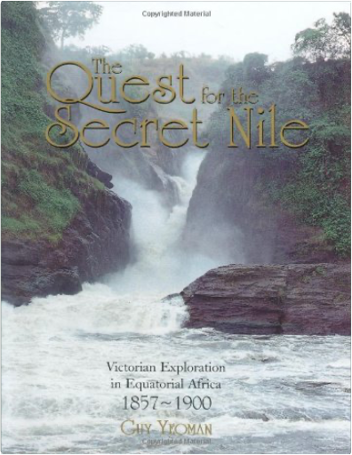

Australia's WestRichard Woldendorp  This updated edition of Richard’s most impressiveand sought-afterhardcover photographic book showcases the beauty and drama of the vast Western Australian landscape.  The Quest For The Secret Nile: Victorian Exploration in Equatorial Africa 1857-1888Guy Yeoman The Nile, stretching for a distance of 4,163 miles, is the longest river in the world. The ancient Greeks were obsessed by the provenance of so much water, feeding a river that flowed out of the desert. Aeschylus, in 500 BC, talked of Egypt being nurtured by the snows. For centuries, the only sporadic reports from the heart of equatorial Africa came from Arab seafarers, land travellers and slavers. In the mid-1850s in Britain, the great thirst for adventure and discovery, combined with the challenge posed by the ancient riddle of the secret sources of the Nile and acted like a magnet on men such as Sir Richard Burton, Captain Hanning Speke, Samuel Baker, Dr David Livingstone and Henry Morton Stanley. This gripping account, illustrated with many prize-winning photographs, traces the tribulations and achievements of the men who walked in the footsteps of Herodotus and carried away the prize: the discovery of the sources of the Nile. |
 Made with Delicious Library
Made with Delicious Library